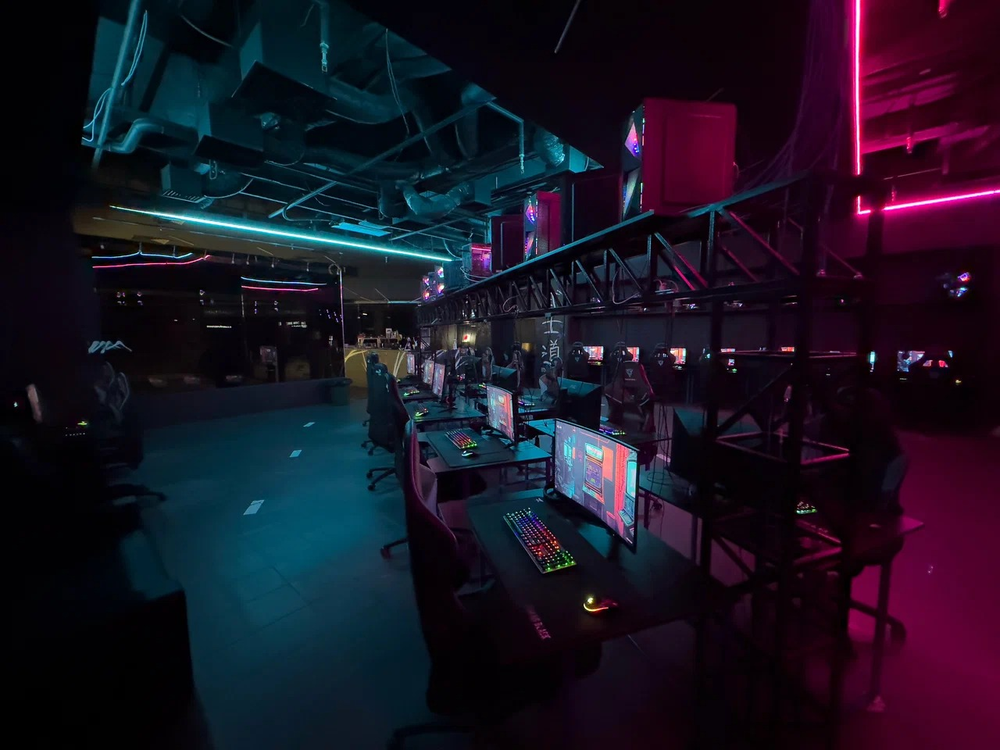
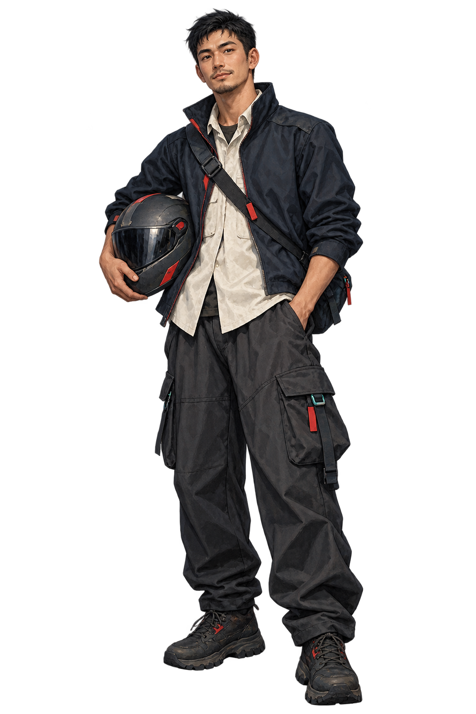
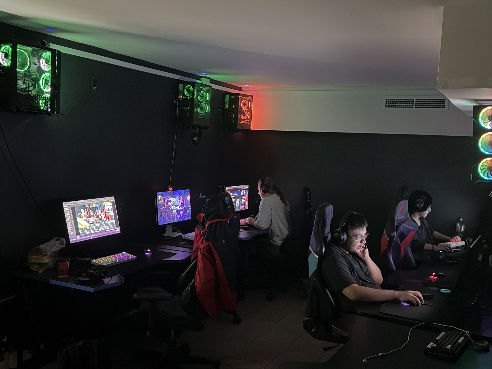
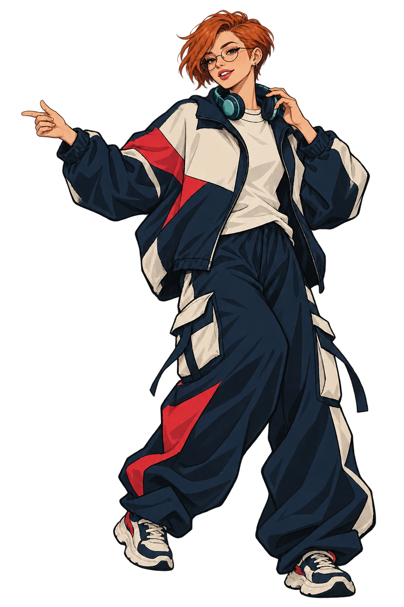

Аватар / 1024 × 1024 / Скачать PNG

Обложка VK / 1600 × 640 / Скачать PNG


Свои людиБЕЗОПАСНОЕ ПОЛЕ 10%
Баннер Telegram / 1600 × 900 / Скачать PNG


в клубеБЕЗОПАСНОЕ ПОЛЕ 10%
Пост 4:5 / 1080 × 1350 / Скачать PNG


своихУвидимся в клубе
История 9:16 / 1080 × 1920 / Скачать PNG

вечер

ПОЛЕ ИНТЕРФЕЙСА
ПОЛЕ ИНТЕРФЕЙСА